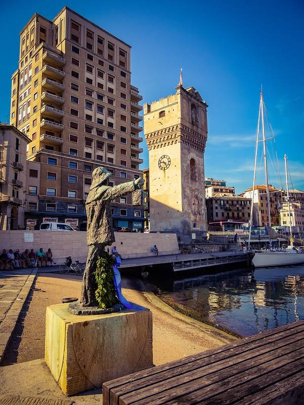

이탈리아 사보나시, 지역 재생에너지 공동체 참여 절차 시작…시의회 표결 남아

시 집행위원회가 첫 단계 승인, 전기를 만들고 쓰는 회원으로 재단에 가입…공동체 이익은 에너지 빈곤 가구 지원에 무게
이탈리아 사보나시가 11월 13일 시 누리집 공지에서 지역 재생에너지 공동체 'CERS 리구리아(리구리아 연대형 재생에너지 공동체)' 참여 방침을 알렸다. 시는 이 공동체를 운영하는 재단에 참여 회원으로 가입해 '프로슈머(전기를 만들면서 쓰는 회원)' 역할을 맡는다. 시 집행위원회가 참여의 첫 단계를 승인했고, 시의회 표결로 절차가 끝난다.
재생에너지 공동체는 공공기관, 시민, 기업, 단체가 태양광 같은 재생에너지 설비에서 나온 전기를 나눠 쓰는 방식이다. CERS 리구리아는 전기요금 절감과 환경 보호에 더해, 취약한 가정과 집단이 일상의 에너지 비용을 감당하도록 돕는 데 무게를 둔다. 시는 이번 참여가 온실가스 감축, 에너지 효율, 기후변화 적응을 다루는 '지속가능에너지·기후행동계획(SECAP)'의 과제 하나라고 밝혔다.
이 재단은 2025년 9월 구성됐고, 설립자는 제노바 상공회의소·제노바 교구·아욱실리움 재단이다. 세 설립자는 2025년 11월 28일 제노바에서 재단 출범을 공개했다.
출처: Comune di Savona 2026-11-13 사보나시 홍보실(Ufficio Comunicazione) 원문 보기
출처: 제노바 교구·제노바 상공회의소·아욱실리움 재단 2025-11-28 보도자료 「Diocesi di Genova, Camera di Commercio e Fondazione Auxilium insieme per la giustizia energetica」 원문 보기